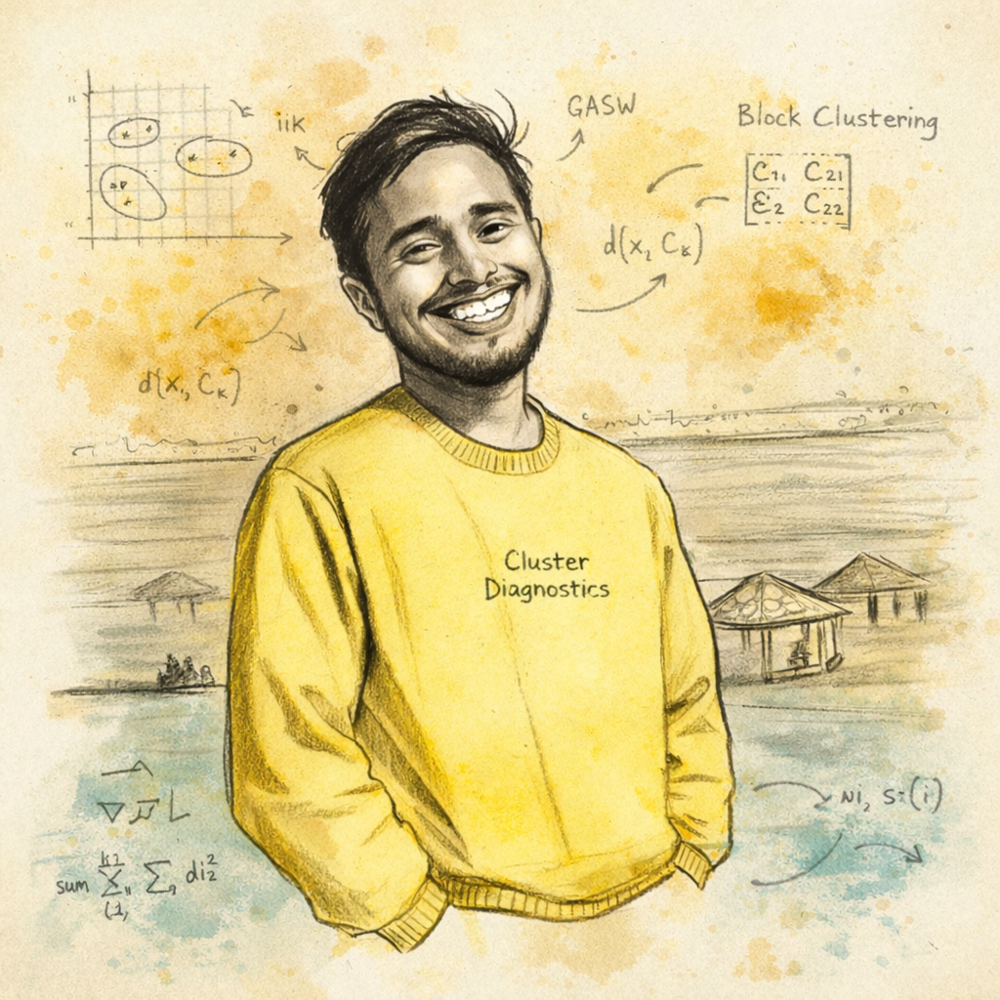

Shrikrishna Bhat K
PhD in Statistics · Researcher · Data Analyst
Developing robust clustering methodologies for complex data.
PhD in Statistics specializing in Cluster Analysis, Probabilistic Distance Methods, and Data Diagnostics.
I work at the intersection of statistical theory and applied survey analytics, developing methods that improve clustering reliability and interpretability. Over 6 years of experience in large-scale socio-economic surveys, urban analytics, and policy-oriented data research.
PhD in Statistics 6+ Years Experience 2 R Packages 3 Published Papers

Academic Profile
🔬 Research
Cluster analysis, block clustering, probabilistic distance methods, and cluster diagnostics.
📖 Publications
Peer-reviewed journal articles and preprints on clustering and density-based diagnostics.
🎤 Conferences
Papers and posters presented at international statistics conferences.
Professional Work
💻 Software
R packages for cluster diagnostics — Silhouette (CRAN) and blockclusterPDQ (GitHub).
📊 Experience
6+ years in large-scale survey analytics, statistical consultancy, and policy research.
🎓 Teaching
Graduate-level courses in statistical computing and research methodology at MAHE.